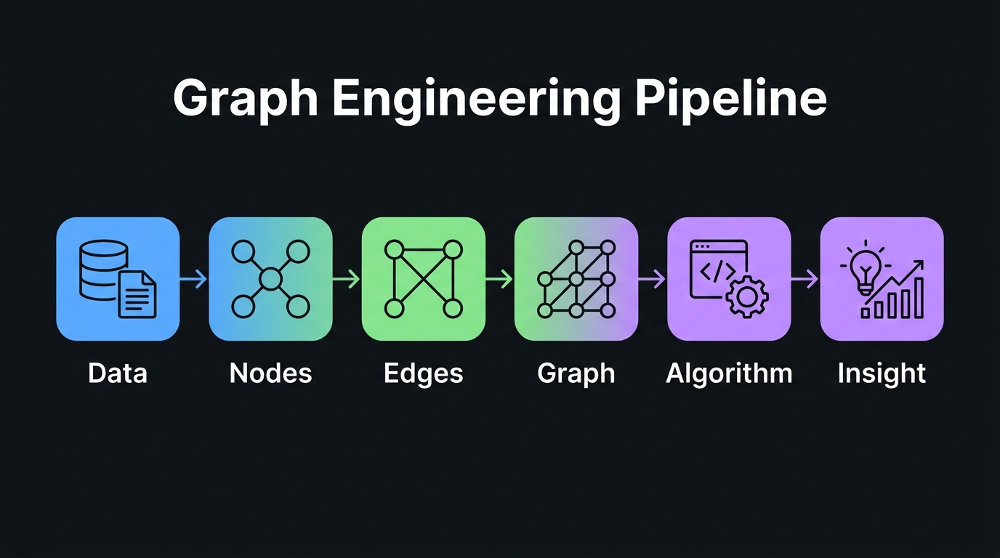
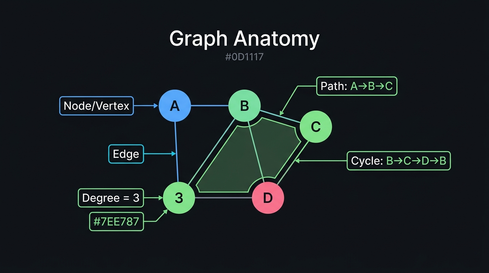
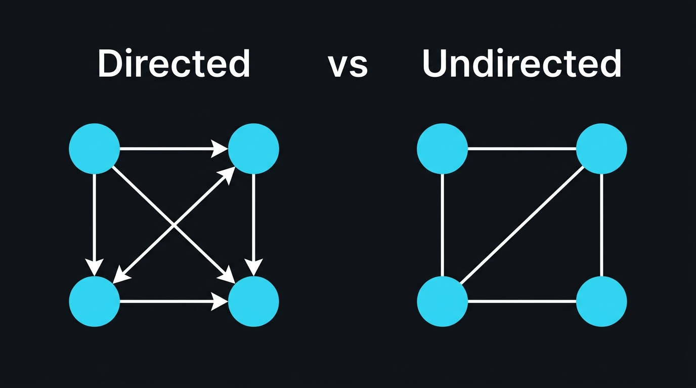
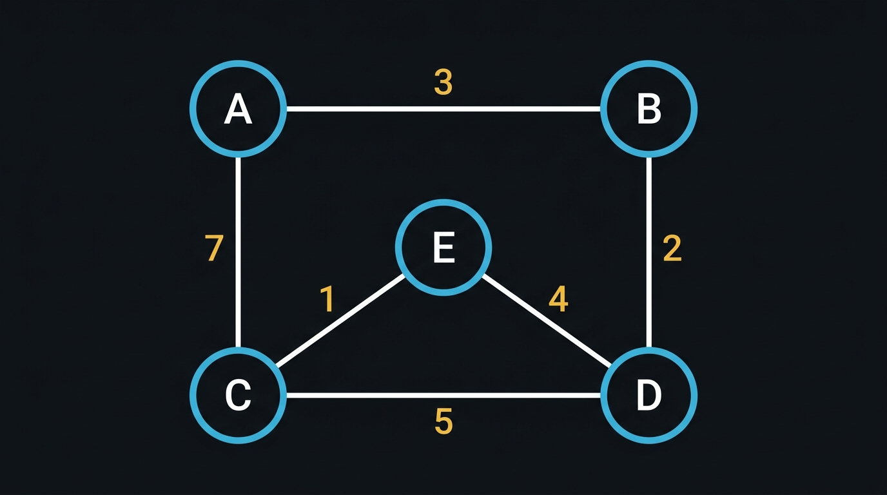
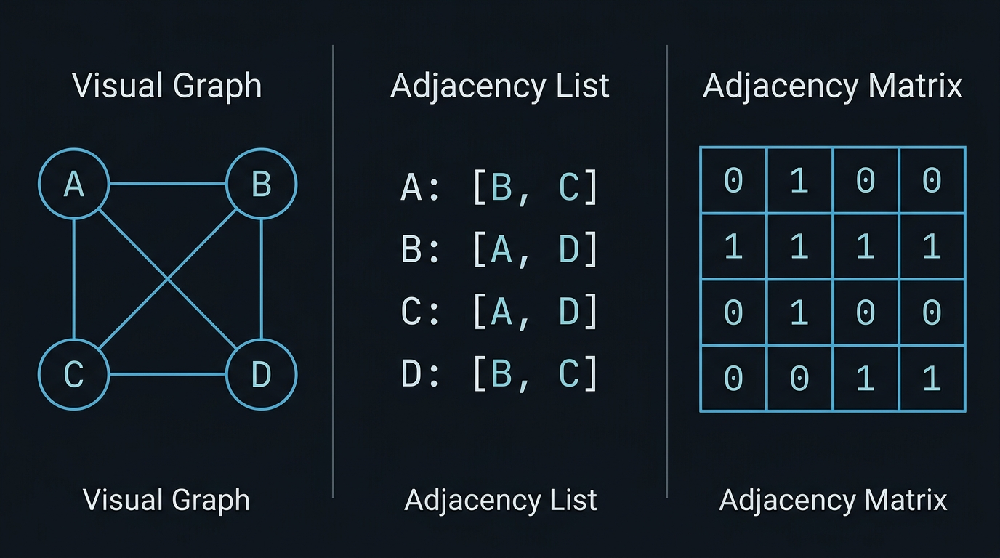
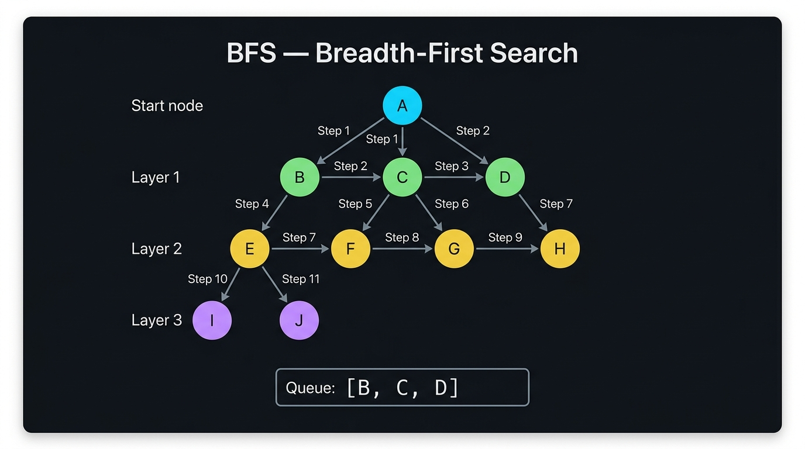
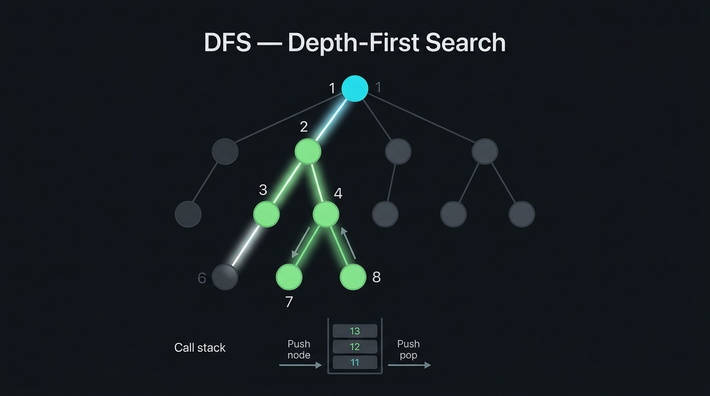
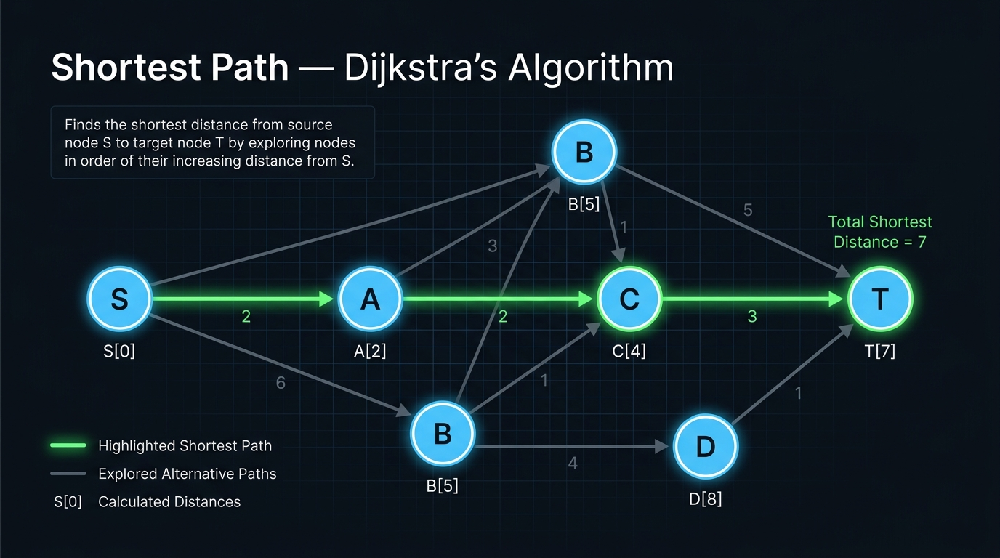
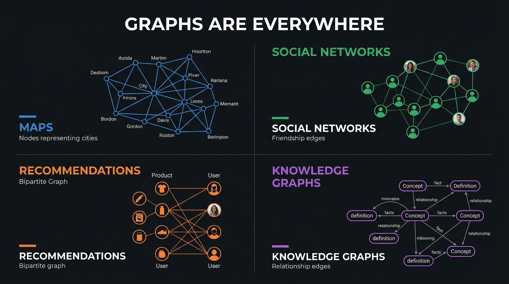

From Google Maps to social networks, from recommendation engines to knowledge graphs — the most powerful systems in computing run on graphs. Build one yourself.
Every graph journey follows this pipeline. You'll experience each stage hands-on.

The building blocks of every graph. Master these, and everything else follows.

A single entity in your graph. A person, a city, a web page, an idea — anything you want to model.
fundamentalA connection between two nodes. Friendships, roads, hyperlinks, dependencies — edges capture relationships.
fundamentalThe number of edges connected to a node. A node with degree 5 has five connections — it's well-connected.
propertyA sequence of nodes connected by edges. Like walking through a network from A to B, following valid connections.
traversalA path that starts and ends at the same node. Like a circular dependency or a round trip — you end up where you began.
structureA graph where every node can be reached from every other node. No isolated islands — everything is linked.
property
Edges have direction. "A follows B" doesn't mean "B follows A." Think Twitter: following is one-way.
Edges go both ways. "A is friends with B" means "B is friends with A." Think Facebook friendships.

In Google Maps, edge weights represent distance or travel time. In a social network, they could represent interaction frequency. Weights let algorithms find the best path, not just any path.
Build your own graph. Add nodes, connect them, drag them around. Every change updates live.
The same graph, three views. Change the graph above — watch all representations update live.

Best for sparse graphs (few edges relative to nodes). Most real-world graphs are sparse. Uses less memory, faster neighbor iteration.
Best for dense graphs or when you need O(1) edge lookup. Simple to implement, but wastes space when edges are few.
Watch algorithms run step-by-step on your graph. Select an algorithm, pick a start node, and hit play.



Graphs aren't academic exercises. They power the systems you use every day.

Intersections are nodes, roads are weighted edges. Dijkstra's algorithm (and its variants) finds the fastest route between any two points.
People are nodes, friendships/follows are edges. BFS finds degrees of separation. Connected components find communities.
Users and items are nodes, interactions are edges. Graph algorithms find similar users and suggest items they haven't discovered yet.
Concepts are nodes, relationships are labeled edges. Google's Knowledge Graph connects billions of facts to answer questions like "Who invented the telephone?"
Routers are nodes, connections are edges. Shortest path algorithms route data packets efficiently across the internet.
Packages are nodes, dependencies are directed edges. Topological sort determines the correct build order. Cycle detection finds circular dependencies.
Notes are nodes, links are edges. Your Obsidian vault, Roam Research, or Notion workspace is a knowledge graph that you traverse every day.
A graph is not just a picture. It is a data structure for representing relationships.
Once you see the world as nodes and edges, you unlock algorithms that have been solving problems for decades:
Graph → Representation → Traversal → Algorithm → Computation → Insight
Now go back to the playground, build a graph that models something from your life, and run an algorithm on it. That's when it clicks.